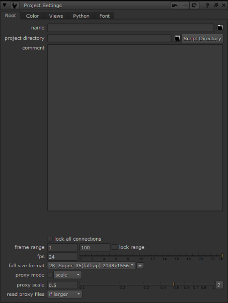

用导航打开主题
你在这里:
名称、时间跨度和帧速率
要设置脚本名称、帧范围和帧速率:
1。
选择
编辑
>
项目设置
,或简单地按
S
在工作区的空白部分。
的
项目设置
面板出现。

2.
在
根
选项卡，键入脚本的名称 (例如,
Firstcomp.nk
) 在
名称
字段。
核武器
的脚本总是有扩展
。Nk
.
3.
键入第一帧和最后一帧的数字
帧范围
用于定义 “拍摄” 时间长度的字段。
4.
在
Fps
字段中，输入您希望脚本观众播放视频的速率 (每秒帧数)。对于基于薄膜的元素，24 fps 是合适的。
本节中的主题